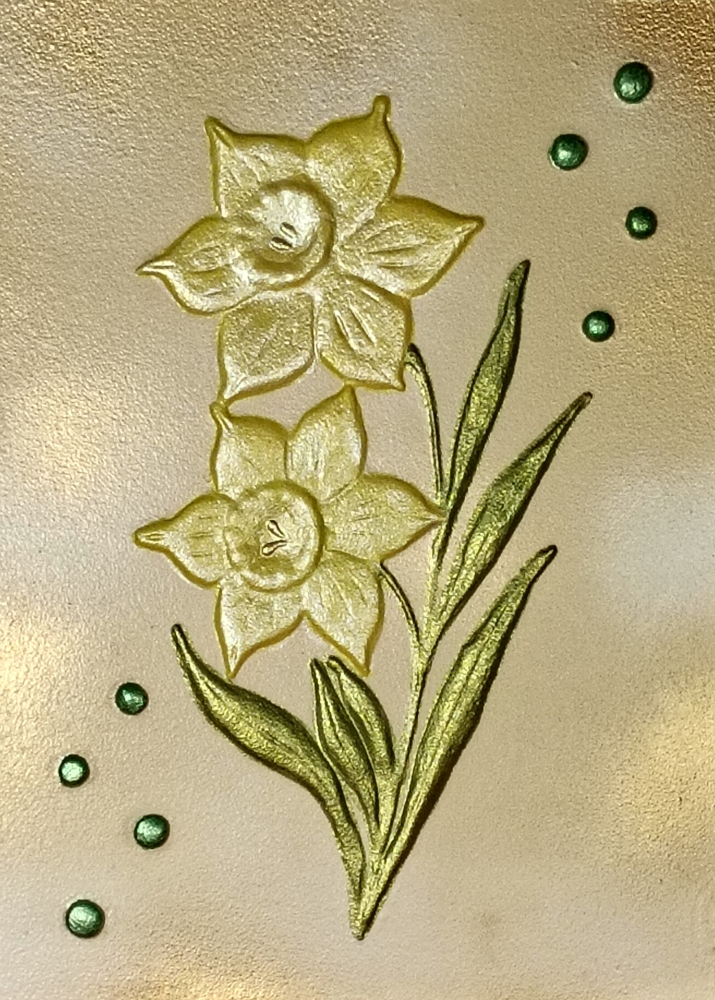

NICOLETA FILIP ART
NARCISOS
Composición floral de narcisos en tonos dorados y amarillos, con hojas verdes y detalles ornamentales.
Sobre la obra
Composición de narcisos en tonos dorados y amarillos, acompañados por hojas verdes estilizadas. Los pequeños elementos circulares verdes completan la composición y aportan equilibrio visual.
Presentación artística
Los narcisos se presentan en una composición vertical de carácter elegante. El uso de tonalidades doradas potencia el efecto de luz sobre el relieve y refuerza la presencia ornamental de la obra.
Ficha técnica
- Año
- 2026
- Dimensiones
- 23 × 32 cm
- Soporte
- Madera
- Técnica
- Técnica mixta: pasta de relieve y flores en alto relieve
- Categoría
- Floral
Si deseas recibir información sobre esta obra, puedes solicitarla directamente.
SOLICITAR INFORMACIÓN →